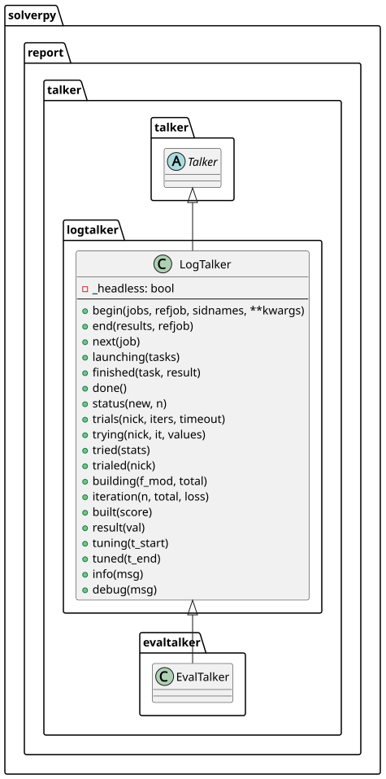

module logtalker
solverpy.report.talker.logtalker
LogTalker — text-only progress reporter
Reports evaluation progress through Python logging calls and writes
Legend/Summary/Statuses to the markdown report via
summary. Used in headless or non-interactive
contexts where tqdm bars are not appropriate.
Also provides default log-based implementations of tuning event methods
(trials, trying, tried, trialed, building, iteration, built,
etc.) so that subclasses only need to override what they want to change.
LogTalker
Bases: Talker
Progress reporter that writes to the Python logger and markdown report.

Calls summary.legend in begin and summary.summarize in end to
write structured tables to the .md report file. Periodic progress
updates are emitted via logger.info at exponentially growing intervals
so long runs stay observable without flooding the log.
Set headless=False (as EvalTalker does) to demote the
per-job info lines to DEBUG — the tqdm bars carry that role instead.
Tuning event methods (trials, building, etc.) provide log-based
default implementations. LoopTalker inherits these and overrides the
ones that should display tqdm bars instead.
Source code in packages/solverpy/src/solverpy/report/talker/logtalker.py
36 37 38 39 40 41 42 43 44 45 46 47 48 49 50 51 52 53 54 55 56 57 58 59 60 61 62 63 64 65 66 67 68 69 70 71 72 73 74 75 76 77 78 79 80 81 82 83 84 85 86 87 88 89 90 91 92 93 94 95 96 97 98 99 100 101 102 103 104 105 106 107 108 109 110 111 112 113 114 115 116 117 118 119 120 121 122 123 124 125 126 127 128 129 130 131 132 133 134 135 136 137 138 139 140 141 142 143 144 145 146 147 148 149 150 151 152 153 154 155 156 157 158 159 160 161 162 163 164 165 166 167 168 169 170 171 172 173 174 175 176 177 178 179 180 181 182 183 184 185 186 187 188 189 190 191 192 193 194 195 196 197 198 199 200 201 202 203 204 205 206 207 208 209 210 211 212 213 214 215 216 217 218 219 220 221 222 223 224 225 226 227 228 229 230 231 232 233 234 235 236 237 238 239 240 241 242 243 244 245 246 247 248 249 250 251 252 253 254 255 256 257 258 259 260 261 262 263 264 265 266 267 268 269 270 271 272 273 274 275 276 277 278 279 280 281 282 283 284 285 286 287 288 289 290 291 292 293 294 295 296 297 298 299 300 301 302 303 304 305 306 307 308 309 310 311 312 313 314 315 316 317 318 319 320 321 322 323 324 325 326 327 328 329 330 331 332 333 334 335 336 337 338 339 340 341 342 343 344 345 346 347 348 349 350 351 352 353 354 355 356 357 358 359 360 361 362 363 364 365 366 367 368 369 370 371 372 373 374 375 376 377 378 379 380 381 382 383 384 385 | |
__init__(headless: bool = True)
Parameters:
| Name | Type | Description | Default |
|---|---|---|---|
headless
|
bool
|
if |
True
|
Source code in packages/solverpy/src/solverpy/report/talker/logtalker.py
81 82 83 84 85 86 87 88 89 90 91 92 93 94 95 96 97 98 99 100 101 102 103 | |
build_begin(f_mod: str, total: int) -> None
Log the start of a model build.
Source code in packages/solverpy/src/solverpy/report/talker/logtalker.py
277 278 279 280 281 282 283 284 285 | |
build_done(score: float) -> None
Log completion of model training.
Source code in packages/solverpy/src/solverpy/report/talker/logtalker.py
320 321 322 | |
build_selected(iteration: int, metrics: dict[str, dict[str, float]]) -> None
Log the metrics of the selected model iteration.
Source code in packages/solverpy/src/solverpy/report/talker/logtalker.py
309 310 311 312 313 314 315 316 317 318 | |
build_step(n: int, total: int, metrics: dict[str, dict[str, float]]) -> None
Emit periodic progress log lines during model training.
Source code in packages/solverpy/src/solverpy/report/talker/logtalker.py
287 288 289 290 291 292 293 294 295 296 297 298 299 300 301 302 303 304 305 306 307 | |
eval_begin(jobs: list[SolverJob], *, refjob: SolverJob | None = None, sidnames: bool = True, report: bool = True, **kwargs) -> None
Set up counters, build nick map, write Legend to report, log job count.
Source code in packages/solverpy/src/solverpy/report/talker/logtalker.py
105 106 107 108 109 110 111 112 113 114 115 116 117 118 119 120 121 122 123 124 125 126 127 128 129 130 131 | |
eval_done() -> None
Log solved/unsolved/error summary for the completed job.
Source code in packages/solverpy/src/solverpy/report/talker/logtalker.py
179 180 181 182 183 184 185 | |
eval_end(results: dict[SolverJob, Result], refjob: SolverJob | None = None, report: bool = True) -> None
Write Summary/Statuses to report, log error count and completion.
Source code in packages/solverpy/src/solverpy/report/talker/logtalker.py
133 134 135 136 137 138 139 140 141 142 143 144 145 146 147 | |
eval_launch(tasks: Sequence[Task]) -> None
Record start time and inject log queue into tasks.
Source code in packages/solverpy/src/solverpy/report/talker/logtalker.py
162 163 164 165 166 167 168 | |
eval_next(job: SolverJob) -> None
Reset per-job counters and log the start of the next job.
Source code in packages/solverpy/src/solverpy/report/talker/logtalker.py
149 150 151 152 153 154 155 156 157 158 159 160 | |
eval_status(new: bool | None, n: int = 1) -> None
Update counters and emit periodic progress log lines.
Parameters:
| Name | Type | Description | Default |
|---|---|---|---|
new
|
bool | None
|
|
required |
n
|
int
|
number of tasks to count (default 1). |
1
|
Source code in packages/solverpy/src/solverpy/report/talker/logtalker.py
187 188 189 190 191 192 193 194 195 196 197 198 199 200 201 202 203 204 205 206 207 208 209 210 211 212 213 214 215 216 217 218 | |
eval_taskdone(task: SolverTask, result: Result) -> None
Update solved/unsolved/error counters based on the task result.
Source code in packages/solverpy/src/solverpy/report/talker/logtalker.py
170 171 172 173 174 175 176 177 | |
train_data(stats: list[dict[str, Any]]) -> None
Write training-file statistics to the report.
Source code in packages/solverpy/src/solverpy/report/talker/logtalker.py
324 325 326 327 328 329 330 331 332 333 334 335 336 337 338 339 340 341 342 343 344 345 346 347 348 349 350 351 352 353 354 355 356 357 358 359 360 361 362 363 364 365 366 367 368 369 370 371 372 373 | |
tune_phase_begin(nick: str, iters: int, timeout: int) -> None
Start a tuning phase: write heading to report and reset trial table.
Source code in packages/solverpy/src/solverpy/report/talker/logtalker.py
222 223 224 225 226 227 228 229 230 231 232 233 | |
tune_phase_done(nick: str) -> None
Write the completed phase's trial table to the report.
Source code in packages/solverpy/src/solverpy/report/talker/logtalker.py
258 259 260 261 262 263 264 265 266 267 268 269 270 271 272 273 274 275 | |
tune_trial_begin(nick: str, it: int, values: list) -> None
Record the current trial description; log if _headless.
Source code in packages/solverpy/src/solverpy/report/talker/logtalker.py
235 236 237 238 239 240 241 242 243 244 | |
tune_trial_done(stats: dict[str, Any]) -> None
Append the completed trial's stats to the phase table.
Source code in packages/solverpy/src/solverpy/report/talker/logtalker.py
246 247 248 249 250 251 252 253 254 255 256 | |